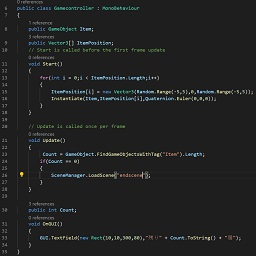

駒場東邦中学校・高等学校 物理部 駒場東邦物理部(KTPC)にようこそ！ 物理部は、プログラミングや電子工作などの、情報・機械工学を中心に活動している部活です。 現在、月曜日から土曜日まで、毎日活動しています。 興味を持った方は、物理第三実験室に是非お越しください。 中2以上の入部も歓迎します。
通常活動 月曜日から土曜日までの毎日、中学棟3階の物理第三実験室で活動しています。 部員は、3つの班のうち最低1つに所属しています。 また、部門も3つあり、複数の班・部門に所属する部員も多くいます。 詳しくは、以下の班・部門紹介のリンクから、 もしくは画面上部の から各班・部門のページをご覧ください。
プログラミング班 ツールやゲームの製作、アルゴリズムや言語に関する研究をしています。 詳しくは、プログラミング班のページをご覧ください。 また、参加したコンテストなどについては、その他コンテストのページにあります。 

 から各班・部門のページをご覧ください。
から各班・部門のページをご覧ください。